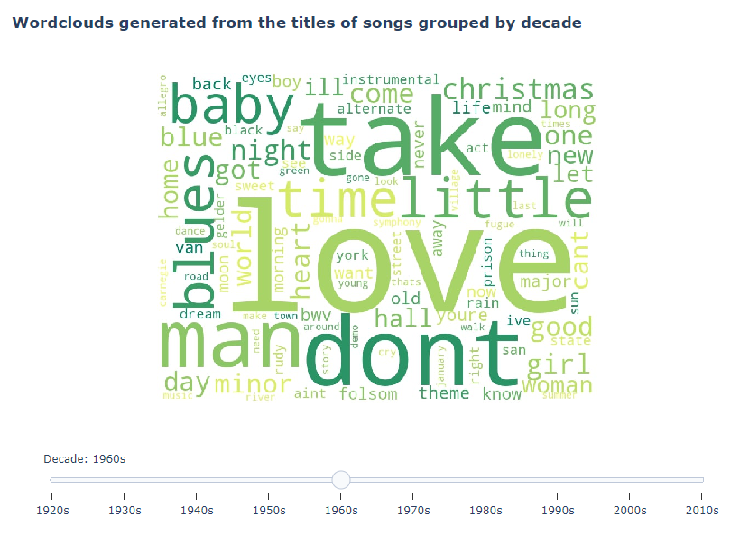

Popular Songs Analysis 1921-2020
Table of contents
Introduction
Cambridge Dictionary defines music as:
"A pattern of sounds made by musical instruments, voices, or computers, or a combination of these, intended to give pleasure to people listening to it."
This means that musical pieces are great subjects for analysis as they consist of patterns. By exploring these patterns one can extract valuable information that later can be used to train various types of predictive models, like genre or popularity prediction.
The purpose of this report is to explore how musical pieces and the general musical taste changed, evolved over the course of a century.
For my analysis I used a dataset consisting of over 160,000 samples of song features.
About the data
The dataset I used for my analysis was uploaded by Yamaç Eren Ay to the Kaggle platform and can be accessed here. It was collected using Spotify's Web API.
This dataset consists of 170,653 samples. Each sample has 19 features that are the following:
| id | The Spotify ID for the track. |
| acousticness | A confidence measure from 0.0 to 1.0 of whether the track is acoustic. 1.0 represents high confidence the track is acoustic. |
| danceability | Danceability describes how suitable a track is for dancing based on a combination of musical elements including tempo, rhythm stability, beat strength, and overall regularity. A value of 0.0 is least danceable and 1.0 is most danceable. |
| energy | Energy is a measure from 0.0 to 1.0 and represents a perceptual measure of intensity and activity. Typically, energetic tracks feel fast, loud, and noisy. |
| instrumentalness | Predicts whether a track contains no vocals. “Ooh” and “aah” sounds are treated as instrumental in this context. Rap or spoken word tracks are clearly “vocal”. The closer the instrumentalness value is to 1.0, the greater likelihood the track contains no vocal content. |
| liveness | Detects the presence of an audience in the recording. Higher liveness values represent an increased probability that the track was performed live. |
| loudness | The overall loudness of a track in decibels (dB). |
| speechiness | Speechiness detects the presence of spoken words in a track. The more exclusively speech-like the recording (e.g. talk show, audio book, poetry), the closer to 1.0 the attribute value. |
| valence | A measure from 0.0 to 1.0 describing the musical positiveness conveyed by a track. Tracks with high valence sound more positive (e.g. happy, cheerful, euphoric), while tracks with low valence sound more negative (e.g. sad, depressed, angry). |
| tempo | The overall estimated tempo of a track in beats per minute (BPM). In musical terminology, tempo is the speed or pace of a given piece and derives directly from the average beat duration. |
| key | The estimated overall key of the track. Integers map to pitches using standard Pitch Class notation . E.g. 0 = C, 1 = C♯/D♭, 2 = D, and so on. If no key was detected, the value is -1. |
| duration_ms | The duration of the track in milliseconds. |
| mode | Mode indicates the modality (major or minor) of a track, the type of scale from which its melodic content is derived. Major is represented by 1 and minor is 0. |
| popularity | The popularity of the track. The value will be between 0 and 100, with 100 being the most popular. |
| name | The name of the track. |
| explicit | Whether or not the track has explicit lyrics ( true = yes it does; false = no it does not OR unknown). |
| artists | The artists who performed the track. |
| year | The year of release. |
| release_date | Date of release mostly in yyyy-mm-dd format, however precision of date may vary. |
Genres were separately extracted from Spotify's database as they are attributes of the artists, not the songs.
By looking at the distribution of the data it is noticeable that the sampling isn't entirely uniform. From 1921 until the mid-1940s the number of samples is relatively low compared to other periods. The cause of this might be the fact that recording technology wasn't as developed and widely available as later on, so the number of published tracks were small.
Analysis
Song attributes
Open in fullscreen.I started my analysis by looking at how different attributes of the songs looked like each year. The radar chart presented above shows the yearly average of these attributes. I also put the standard deviation on the plot to be more accurate.
Early songs were characterized by higher acousticness and loudness values, moderate danceability, valence and instrumentalness, and lower energy and liveness. Later the average acousticness drastically decreases and songs become more energetic and danceable.
Open in fullscreen.The line chart above presents how the average of the song attributes changed over the years.
By examining these plots we can notice that the observed decrease in acousticness and increase in energy happened around the same period of time. We can also discover that the loudness of the tracks showed a slow but steady increase.
Open in fullscreen.The majority of the songs was written in a major key which means that the dominant emotion of the songs analysed is happiness.
Open in fullscreen.Looking at the pearson correlation of the numerical features we notice a few things. First, there is a strong positive correlation between year and popularity, which is due to the fact that Spotify takes into account the year of release when calculating popularity scores. Second, the relationship between the acousticness and energy that was discussed earlier is present through a strongly negative correlation. An interesing thing is the positive correlation between loudness and energy.
Genres
Open in fullscreen.The above race plot shows the top 10 genres that the most songs belong to in the selected year. From 1921 until the 1950 the most songs were classical pieces and its subgenres. From the 1950s up until mid-1960s jazz was the dominant genre. From the 1960s until the 2000s the majority of the songs in the sample were rock songs. In the 1980s we can see the appearance of the 'new wave' genre, after that during the 90s there were quite a few metal songs. From the mid-1990s we can see that hip hop and pop songs started to take over the leaderboard. The 2010 are dominated by these two genres and their subgenres.
Open in fullscreen.I also wanted to explore the distribution of tempo from songs that belong to a selected genre. The data confirmed my expectations, faster genres being the likes of dance pop, disco, punk, and slower genres are some subgenres of classical music, like early romantic era, and jazz.
Song titles
Open in fullscreen.